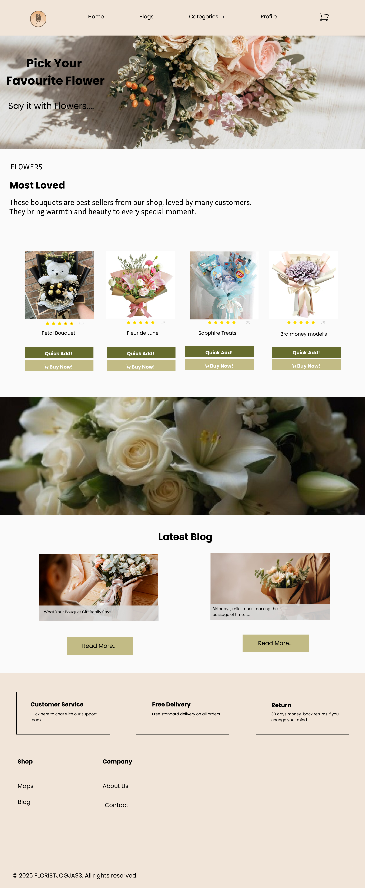
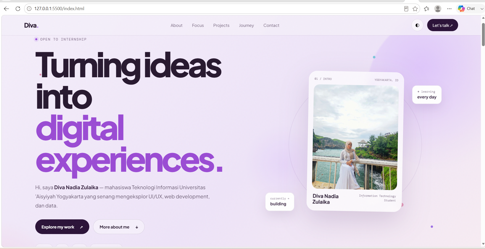
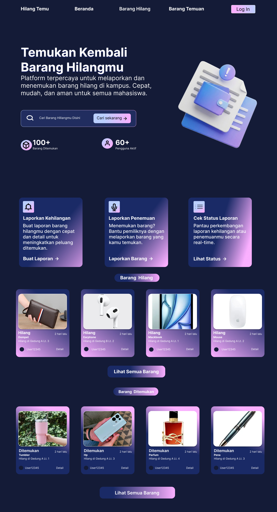
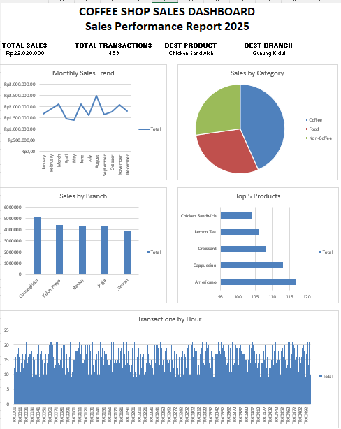
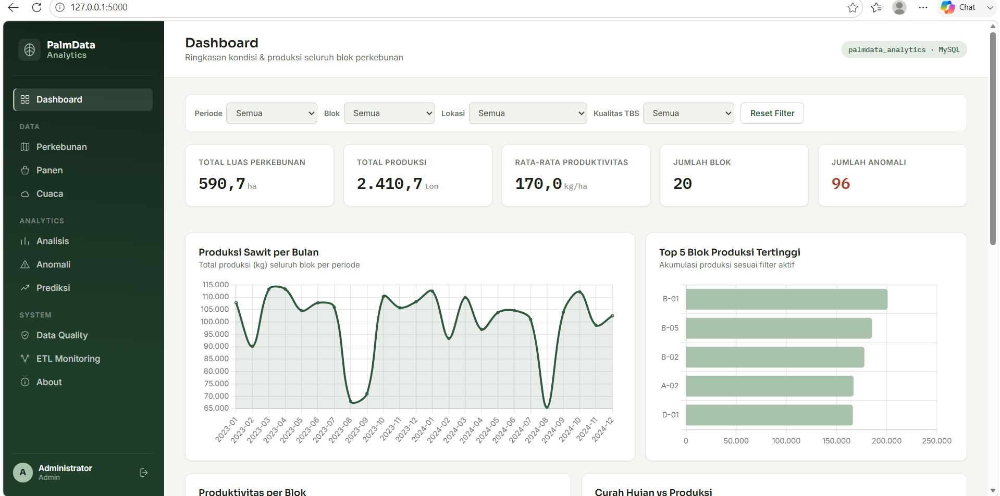
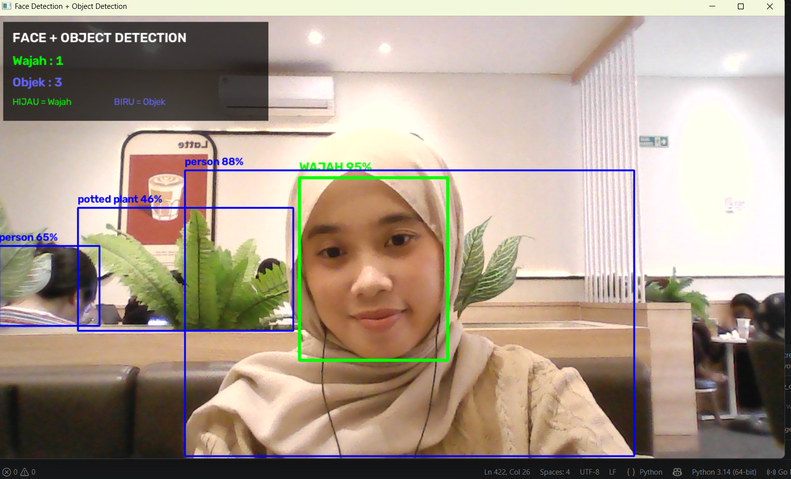
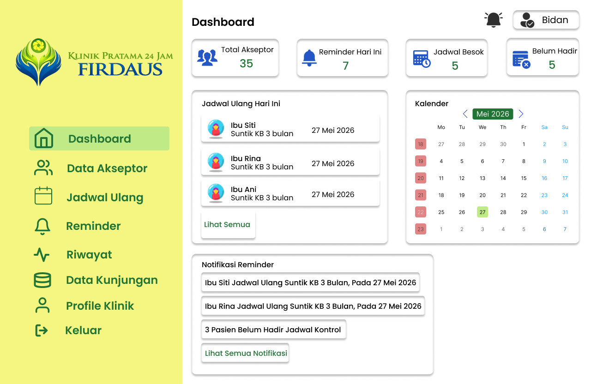

01
UI/UX Design
Merancang tampilan yang sederhana, nyaman digunakan, dan punya alur yang jelas.
FIGMA · PROTOTYPEHi, saya Diva Nadia Zulaika — mahasiswa Teknologi Informasi Universitas 'Aisyiyah Yogyakarta yang senang mengeksplor UI/UX, Web Development, dan Data Visualization.
A little bit about the person behind the screen.
Saya mahasiswa Teknologi Informasi yang senang mencoba dan mempelajari hal-hal baru di dunia teknologi. Saya tertarik pada bagaimana sebuah ide dapat dikembangkan menjadi solusi digital yang mudah digunakan dan bermanfaat.
Saat ini saya terus mengembangkan kemampuan melalui project kuliah, project pribadi, dan pengalaman belajar. Saya juga sedang mencari kesempatan magang untuk belajar dari project nyata dan berkembang bersama tim.
Saya sedang membangun fondasi, mencoba hal baru, dan mencari bidang yang paling cocok.
Merancang tampilan yang sederhana, nyaman digunakan, dan punya alur yang jelas.
FIGMA · PROTOTYPEMembangun website dari ide menjadi halaman yang responsif dan interaktif.
HTML · CSS · JAVASCRIPTMengolah dan menyajikan data mentah menjadi dasbor interaktif serta grafik yang mudah dipahami untuk mempermudah analisis.
PYTHON · MYSQL · EXCELBeberapa project kuliah dan pribadi yang menjadi bagian dari proses belajar saya.
Mendesain tampilan website toko bunga Florist Jogja93 menggunakan Figma, mulai dari wireframe hingga prototype.

Membangun website portfolio pribadi menggunakan HTML, CSS, dan JavaScript dengan fokus pada tampilan simpel dan responsif.

Lost And Found merupakan sistem pencari barang hilang di lingkungan kampus. Disini Saya berpartisipasi sebagai UI/UX dan dokumenter, mulai dari merancang tampilan sampai mendokumentasikan proses pengembangan website Lost & Found.

Membuat dashboard untuk menganalisis data penjualan coffee shop menggunakan Microsoft Excel. Proyek ini mencakup proses data cleaning, pengolahan data, analisis penjualan, hingga visualisasi dalam bentuk dashboard.

PalmData Analytics adalah sistem internal berbasis web untuk memantau kondisi blok perkebunan Kelapa Sawit, menganalisis produktivitas, mendeteksi anomali produksi, dan memprediksi produksi periode berikutnya.

Proyek ini bertujuan untuk mengembangkan sistem computer vision yang dapat mengenali wajah dan objek dalam gambar atau video. Sistem ini menggunakan teknik machine learning untuk melakukan deteksi dan klasifikasi objek.

Berpartisipasi dalam merancang tampilan UI website Reminder KB bersama tim, termasuk dokumentasi proyek.

Memulai perjalanan sebagai mahasiswa Teknologi Informasi dan mengenal web, basis data, UI/UX, serta pemrograman.
Mengembangkan kemampuan melalui project kuliah, mulai dari desain UI/UX, website, sampai belajar mengelola data.
Terus membangun project pribadi dan mencari kesempatan magang untuk mendapatkan pengalaman langsung dari project nyata.
Sertifikat dan pelatihan yang mendukung proses belajar saya di bidang teknologi, desain, dan data.
MySkill
Kelas Microsoft Excel oleh MySkill-Index Match, Vlookup and Hlookup in Ms. Excel.
HKI UI/UX
Perancangan Prototype UI/UX Sistem Reminder Kunjungan Ulang Pasien KB 3 Bulan di Klinik Firdaus Yogyakarta.
Skilvul
Sertifikat Python Dasar dari Skilvul.
UI/UX · Data Analysis · Web Development·
Personal projects and academic projects
Internship opportunities & real-world experience
Terbuka untuk belajar, berkolaborasi, dan kesempatan magang. Kalau ingin ngobrol tentang project atau teknologi, feel free to reach out.
divanadiazulaika31@gmail.com ↗